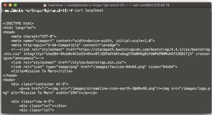
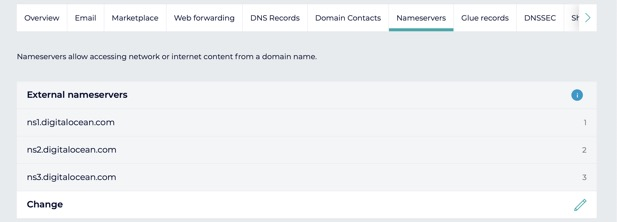
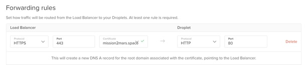
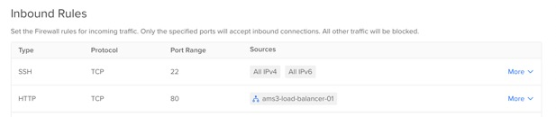
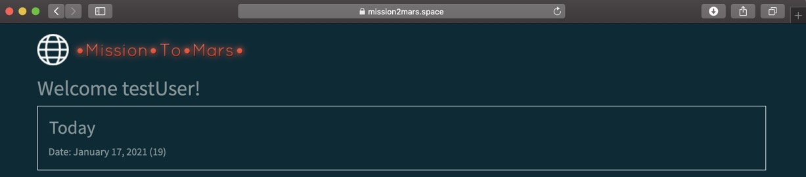
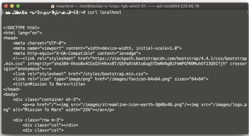
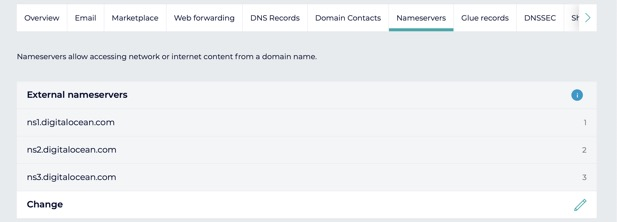
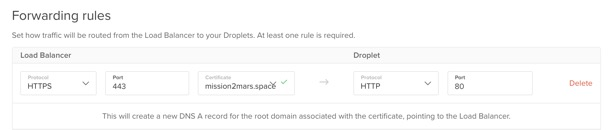
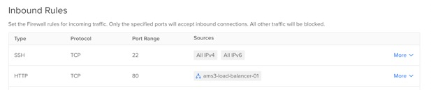
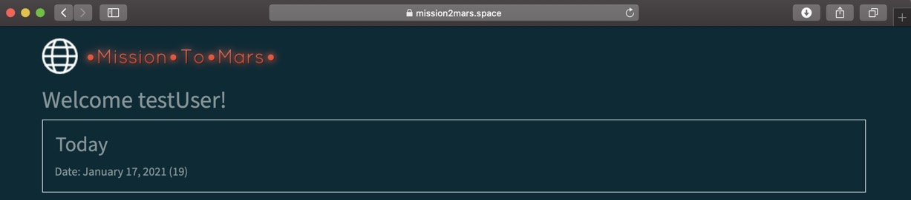

Running Vapor apps in the Cloud using Docker and Digital Ocean
So, you created a nice Vapor app? Or you followed one of many online Vapor tutorials? And you have it running successfully, albeit locally? Now you want to run it on the server? This is exactly where I was a couple of days ago. And getting my App to run online was a little tougher than expected…
Over the last couple of weeks, I've been working on an online game (mission2mars.space). A few days ago it was in a state where I wanted to see whether I could get it running online somewhere.
Now, there are many different options to run code online. And your preferred method depends on your requirements and priorities. So, I'll start by articulating mine:
When assessing and testing solutions, I will refer back to these requirements.
Both Vapor Cloud and Heroku have free tiers (satisfy requirement 1) and should be able to run the app without any additional system administration (requirement 2). They also provide FQDN and https out of the box, so these solutions were the first for me to try out. However, I quickly ran into snags:
My code is based on Swift 5.1, however the latest version supported (i.e. a build pack is available) on Heroku is 5.0.3. So I was unable to run my code, without down porting to the lower Swift version. I find down porting a terrible thing to do BTW, so I articulated a new requirement instead: support Swift 5.1. And looked elsewhere.
Vapor Cloud is interesting as it is marketed as the easiest way of running Vapor code online. However, I could not get it to work. Although my code compiled, and the vapor command line tool told me everything was ok, the site remained inaccessible (the load balancer was apparently unable to connect to the Vapor game). I don't believe this is a Vapor Cloud issue. Unfortunately, all the log files remained empty, so I was unable to troubleshoot further.
Next on my list: generic cloud & IaaS solutions
As the PaaS solutions didn't work (in my case), I looked further down the stack at IaaS solutions. Do note that at this time I was able to run the app from a Docker container.
(AWS) Amazon Web Services was my first stop. AWS does not have native support for Swift/Vapor, but has various ways of running Docker containers. From Elastic Container Service, through Elastic Beanstalk to a vanilla EC2 server. I did get the app running in an EC2 server, but eventually found AWS to confusing for my liking. In particular:
(I did a comparison with Azure, and found it typically more expensive for my current needs than AWS)
I eventually settled for Digital Ocean. In particular because it provides a very simple pricing model: servers (and additional services) are quoted per month. So, it might not be the cheapest solution (there is no free tier) and I probably pay more than I use, but it is predictable and I know I can afford it. Also, it provides a lot of setup assistance and excellent documentation to get a web application up and running.
So, how do you get a Vapor application running on a Digital Ocean server (or Droplet as they call them)?
Digital Ocean does not have Swift/Vapor support out of the box, but it does have excellent Docker support. So the first thing you need to do is make sure you can run your Vapor application from a Docker container.
You need to get Docker on your Mac. I recommend the Docker Desktop app. This allows you to start, configure and stop the Docker daemon from a graphical menu item.
Create a file called "Dockerfile" in the root folder of your Vapor project. This is the Dockerfile I use (it's based on the one vapor creates when you create a new project):
This Dockerfile works in two phases: in the first phase (lines 1-12) a container is spun up to build the application. The built application is then copied into another (much smaller) container. The latter container is used to run your app. It is much smaller (~250MB) than the build container (~2GB).
Build the container using the Docker command (from the same folder where you created Dockerfile):
Then create and run a container from the new image.
So you can run your app from a Docker container. Excellent! Now you need to get it on a Droplet.
The app I published doesn't use any remote databases, but instead uses SQLite. The reason for this is cost: a managed database from a cloud provider costs about $15 per month. That is the same price as my Droplet + Loadbalancer! I've been able to run the game also using PostgreSQL (locally using docker-compose and in Digital Ocean). If in the future there is need to migrate back to an actual RDBMS system, I'll outline the steps taken to get there. For now, SQLite will be good enough, especially because I don't care about data loss. My game is pre-release software and free! No guarantees… ;)
First create an account and a Droplet on Digital Ocean (the smallest one will probably do for now). Then you need to get your app on the Droplet. I suppose this can be done in two ways:
1. Replicate your build environment to the Droplet. Then build the Docker image on the Droplet itself (basically repeat the previous steps);
2. Use a Docker image repository (like hub.docker.com - free for public images)
I chose the latter solution because the Droplet I chose is fast enough and has plenty of memory to run the app (hurray for compiled code!), but not quite enough to quickly build it. Using Docker Hub I am able to use my local laptop to do all compiling.
To get my game on Docker Hub, I do the following:
(On laptop)
(On Droplet)
If the app starts successfully, you should be able to access it using cURL from the server:

Congratulations! You have a Vapor app running on a cloud server!
Second, you need some way of accessing the server when you have it running. Depending on your requirements, you can just use an elasting-ip address (a static public IP address, free with your Droplet) and use that to access it.
However, I expect you want to provide some sort of hostname and https to access your application. To do this, you need three things:
I'll go over each step in more detail below
I assume you have some domain name you want to use for your game. I was able to get mission2mars.space for 1,20 Euro (!) using Gandi. There are guides specific to most Domain registrars.

When you have the domain set to use the Digital Ocean domain servers, it takes some time for this change to be visible on the Internet. I advice you wait about an hour before attempting the next step.
On Digital Ocean, you can now setup the domain. Its mostly a wizard you need to follow, but for details see here.
We will use a load balancer as the front-end to access the App. The load balancer configuration wizard also creates an HTTPS certificate for you, if you don't have one yourself. The wizard will also create any domain records (A-records) that are needed to resolve the domain name. At a minimum, you need the following forwarding rule:

Do note that you need to configure the load balancer within the same datacenter as the Droplet that runs the App. So if you chose Amsterdam-3 for the latter, you should also choose Amsterdam-3 for the former. I made this mistake and it cost me a few hours to figure it out.
Its wise to setup a firewall for your Droplet. Most likely you will need to allow SSH inbound access. Please note that that the load balancer needs explicit access to the Vapor app. I didn't know this, and until I did, the load balancer thought my application was "down".

The end result should be a Vapor app, professionally accessible through a domain and https!

(Notice the Lock in the address bar)
The next step is probably sending e-mails from the game. When the time comes, I'll show you how to do this in another post.
Now, there are many different options to run code online. And your preferred method depends on your requirements and priorities. So, I'll start by articulating mine:
Requirements:
- The solution needs to be affordable (note: this is != free);
- Preferable the solution needs to be much "hands off" as possible: PaaS over IaaS over physical hardware;
- The game should be accessible using a fully qualified hostname (so, not by ip-address) on a regular port (i.e. not on 52413);
- The game should be accessible using https.
- Note: requirement 1 might sound like I'm cheap. But remember, for now this is just a hobby. It only costs money. No problem, but it needs to be manageable.
When assessing and testing solutions, I will refer back to these requirements.
PaaS solutions: Vapor Cloud and Heroku
Both Vapor Cloud and Heroku have free tiers (satisfy requirement 1) and should be able to run the app without any additional system administration (requirement 2). They also provide FQDN and https out of the box, so these solutions were the first for me to try out. However, I quickly ran into snags:
Heroku
My code is based on Swift 5.1, however the latest version supported (i.e. a build pack is available) on Heroku is 5.0.3. So I was unable to run my code, without down porting to the lower Swift version. I find down porting a terrible thing to do BTW, so I articulated a new requirement instead: support Swift 5.1. And looked elsewhere.
Vapor Cloud
Vapor Cloud is interesting as it is marketed as the easiest way of running Vapor code online. However, I could not get it to work. Although my code compiled, and the vapor command line tool told me everything was ok, the site remained inaccessible (the load balancer was apparently unable to connect to the Vapor game). I don't believe this is a Vapor Cloud issue. Unfortunately, all the log files remained empty, so I was unable to troubleshoot further.
Next on my list: generic cloud & IaaS solutions
As the PaaS solutions didn't work (in my case), I looked further down the stack at IaaS solutions. Do note that at this time I was able to run the app from a Docker container.
AWS
(AWS) Amazon Web Services was my first stop. AWS does not have native support for Swift/Vapor, but has various ways of running Docker containers. From Elastic Container Service, through Elastic Beanstalk to a vanilla EC2 server. I did get the app running in an EC2 server, but eventually found AWS to confusing for my liking. In particular:
- There is soooo much choice, I'm unsure what to use;
- Also, to set up a complete system requires setting up a lot of components: not just the server, but also load balancers, networks, certificates, etc.;
- Cost control is difficult because everything is metered and due to the sheer number of choices, getting an idea about how much it would cost in practice to run this game online became very difficult. For me being affordable (requirement 1) means more than "cheap", it also means predictable (will I be able to settle the bill at the end of the month?). Although I have no doubt that AWS can be very cost effective, the uncertainty about the cost makes this too much of a risk for me.
(I did a comparison with Azure, and found it typically more expensive for my current needs than AWS)
Digital Ocean
I eventually settled for Digital Ocean. In particular because it provides a very simple pricing model: servers (and additional services) are quoted per month. So, it might not be the cheapest solution (there is no free tier) and I probably pay more than I use, but it is predictable and I know I can afford it. Also, it provides a lot of setup assistance and excellent documentation to get a web application up and running.
Running Vapor on Digital Ocean
So, how do you get a Vapor application running on a Digital Ocean server (or Droplet as they call them)?
Digital Ocean does not have Swift/Vapor support out of the box, but it does have excellent Docker support. So the first thing you need to do is make sure you can run your Vapor application from a Docker container.
Docker setup for Vapor apps
You need to get Docker on your Mac. I recommend the Docker Desktop app. This allows you to start, configure and stop the Docker daemon from a graphical menu item.
Create a file called "Dockerfile" in the root folder of your Vapor project. This is the Dockerfile I use (it's based on the one vapor creates when you create a new project):
This Dockerfile works in two phases: in the first phase (lines 1-12) a container is spun up to build the application. The built application is then copied into another (much smaller) container. The latter container is used to run your app. It is much smaller (~250MB) than the build container (~2GB).
Build the container using the Docker command (from the same folder where you created Dockerfile):
docker image build -t mission2mars:0.0.2 . (Substitute "mission2mars:0.0.2" for your own productname and version number)Then create and run a container from the new image.
docker container run --publish 80:8080 --detach --name m2m maartene/mission2mars:0.0.2So you can run your app from a Docker container. Excellent! Now you need to get it on a Droplet.
A note about databases
The app I published doesn't use any remote databases, but instead uses SQLite. The reason for this is cost: a managed database from a cloud provider costs about $15 per month. That is the same price as my Droplet + Loadbalancer! I've been able to run the game also using PostgreSQL (locally using docker-compose and in Digital Ocean). If in the future there is need to migrate back to an actual RDBMS system, I'll outline the steps taken to get there. For now, SQLite will be good enough, especially because I don't care about data loss. My game is pre-release software and free! No guarantees… ;)
Run your Vapor app in a Droplet
First create an account and a Droplet on Digital Ocean (the smallest one will probably do for now). Then you need to get your app on the Droplet. I suppose this can be done in two ways:
1. Replicate your build environment to the Droplet. Then build the Docker image on the Droplet itself (basically repeat the previous steps);
2. Use a Docker image repository (like hub.docker.com - free for public images)
I chose the latter solution because the Droplet I chose is fast enough and has plenty of memory to run the app (hurray for compiled code!), but not quite enough to quickly build it. Using Docker Hub I am able to use my local laptop to do all compiling.
To get my game on Docker Hub, I do the following:
(On laptop)
### Tag image
docker image tag mission2mars:0.0.2 maartene/mission2mars:0.0.2
### Upload image to Registry (Docker Hub)
docker image push maartene/mission2mars:0.0.2(On Droplet)
### Pull new version of imagedocker image pull maartene/mission2mars:0.0.2
### Stop the old container
docker container stop m2m
### Destroy old container
docker container rm m2m
### Run a new container with the new version
docker container run --publish 80:8080 --detach --name m2m maartene/mission2mars:0.0.2If the app starts successfully, you should be able to access it using cURL from the server:
curl hostname
Congratulations! You have a Vapor app running on a cloud server!
Domain setup
Second, you need some way of accessing the server when you have it running. Depending on your requirements, you can just use an elasting-ip address (a static public IP address, free with your Droplet) and use that to access it.
However, I expect you want to provide some sort of hostname and https to access your application. To do this, you need three things:
- A correctly configured domain
- A load balancer configured to offload https
- A correctly configured firewall
I'll go over each step in more detail below
Correctly configured domain
I assume you have some domain name you want to use for your game. I was able to get mission2mars.space for 1,20 Euro (!) using Gandi. There are guides specific to most Domain registrars.

When you have the domain set to use the Digital Ocean domain servers, it takes some time for this change to be visible on the Internet. I advice you wait about an hour before attempting the next step.
On Digital Ocean, you can now setup the domain. Its mostly a wizard you need to follow, but for details see here.
Setup load balancer
We will use a load balancer as the front-end to access the App. The load balancer configuration wizard also creates an HTTPS certificate for you, if you don't have one yourself. The wizard will also create any domain records (A-records) that are needed to resolve the domain name. At a minimum, you need the following forwarding rule:

Do note that you need to configure the load balancer within the same datacenter as the Droplet that runs the App. So if you chose Amsterdam-3 for the latter, you should also choose Amsterdam-3 for the former. I made this mistake and it cost me a few hours to figure it out.
A correctly configured firewall
Its wise to setup a firewall for your Droplet. Most likely you will need to allow SSH inbound access. Please note that that the load balancer needs explicit access to the Vapor app. I didn't know this, and until I did, the load balancer thought my application was "down".

The end result should be a Vapor app, professionally accessible through a domain and https!

(Notice the Lock in the address bar)
Next steps
The next step is probably sending e-mails from the game. When the time comes, I'll show you how to do this in another post.